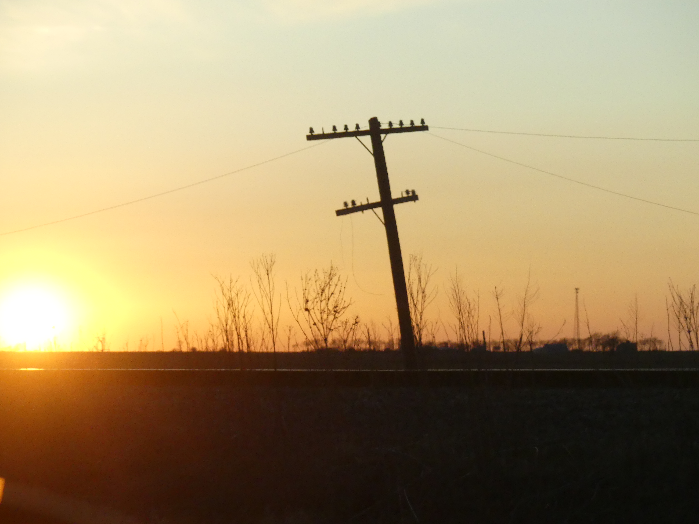

Illinois sunset from a country road.
Teaching
At UIUC:
- Fall 2025: Instructor for Math 413 "Introduction to Combinatorics." Syllabus
- Fall 2024: Instructor for Math 441 "Differential Equations." Syllabus
At UW Madison:
- Spring 2024: Instructor for Math 632 "Introduction to Stochastic Processes."
- Spring 2024: Instructor for Math 431 "Introduction to Probability."
- Spring and Fall 2023: Instructor for Math 632 "Introduction to Stochastic Processes."
- Fall 2022: Instructor for Math 632 "Introduction to Stochastic Processes."
- Spring 2022: Instructor for Math 475 "Introduction to Combinatorics."
- Fall 2024: Instructor for Math 431 "Introduction to Probability."
At UC Berkeley:
- Spring 2020: GSI for Math 128A "Numerical Analysis."
- Spring 2019: GSI for Math 54 "Linear Algebra and Differential Equations."
- Fall 2018: GSI for Math 54 "Linear Algebra and Differential Equations."
- Fall 2017: GSI for Math 53 "Multivariable Calculus."
- Spring 2017: GSI for Math 53 "Multivariable Calculus."
- Fall 2016: GSI for Math 54 "Linear Algebra and Differential Equations."
- Spring 2016: GSI for Math 1B "Calculus II."
- Fall 2015: GSI for Math 1A "Calculus I."
Other
At SLMath:
Notes:
- Some notes on hook walks.
- Some notes on plane partitions and vertex models made for an undergraduate reading course on integer partitions in the spring of 2023.
- Some notes on bijectivization of the Yang-Baxter equation for a five-vertex model.